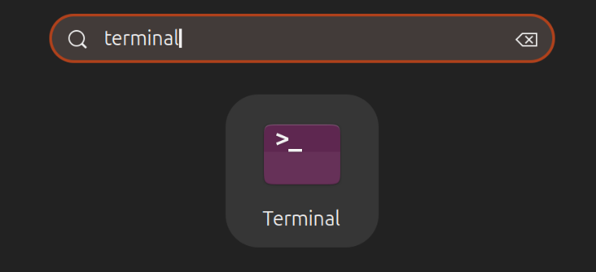
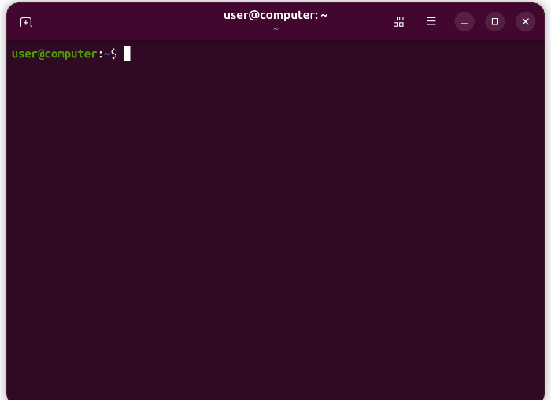

La terminal sin miedo
Qué es la terminal, cuándo merece la pena usarla y las órdenes básicas, con un simulador para practicar.
La terminal sin miedo
⌨️ Una forma de hablar con el ordenador
La terminal es una ventana donde escribes órdenes en lugar de hacer clic. Parece intimidante, pero la mayor parte de tu día en Ubuntu no la necesitarás. Merece la pena saberla porque muchas guías de ayuda la usan: son «copiar la orden y pegarla», y entender qué haces te protege de errores.
Abrir una terminal
Hay tres formas: pulsar [[Ctrl+Alt+T]]; buscar «terminal» en las Actividades; o hacer clic en su icono del Dock si lo tienes.

Captura realUna forma de abrirla: buscar «terminal». Fuente: tutorial oficial «The Linux command line for beginners» (ubuntu.com/desktop/docs) (6 de octubre de 2026). El aspecto puede cambiar con el tiempo.

Captura realLa terminal recién abierta: una ventana casi vacía con una línea de texto, el «prompt». Fuente: tutorial oficial «The Linux command line for beginners» (ubuntu.com/desktop/docs) (6 de octubre de 2026). El aspecto puede cambiar con el tiempo.
Leer el prompt
La línea usuario@equipo:~$ te dice quién eres (usuario), en qué equipo estás (equipo), en qué carpeta (~ es tu carpeta personal) y que el sistema espera una orden ($).
Las órdenes que más usarás
| Orden | Qué hace | Ejemplo |
|---|---|---|
pwd | Muestra en qué carpeta estás | pwd |
ls | Lista lo que hay en la carpeta | ls |
cd | Cambia de carpeta (cd .. sube una; cd solo vuelve a casa) | cd Documentos |
mkdir | Crea una carpeta | mkdir Curso |
cat | Muestra el contenido de un archivo de texto | cat apuntes.txt |
cp | Copia un archivo | cp apuntes.txt Curso |
mv | Mueve o renombra | mv viejo.txt nuevo.txt |
rm | Borra un archivo (sin pasar por la Papelera) | rm prueba.txt |
sudo | Ejecuta algo como administrador (pide tu contraseña) | sudo apt update |
Trucos que ahorran mucho tiempo
- ⇥ La tecla Tab autocompleta nombres de archivos y carpetas. Escribe las primeras letras y pulsa Tab.
- ⬆️ La flecha ↑ recupera las órdenes anteriores.
- ✋ Ctrl + C detiene una orden que se queda ejecutando.
- 📋 Para copiar y pegar en la terminal se usa Ctrl + Mayús + C y Ctrl + Mayús + V (no solo Ctrl+C / Ctrl+V).
- 📖 Casi todas las órdenes aceptan
--helppara explicar su uso (por ejemplols --help).
rm no tiene papelera, lo borrado no vuelve. (2) No pegues órdenes que no entiendas, sobre todo si llevan sudo. (3) Las mayúsculas importan: Documentos no es documentos. (4) Cuando escribas la contraseña del sudo, no verás nada: es normal.🖥️ Practica en un terminal simulado
Este terminal es un simulador seguro: no puede dañar nada. Tiene una carpeta personal de ejemplo. Prueba las órdenes y completa las misiones. Pulsa Tab para autocompletar y ↑ para repetir órdenes. Escribe help para ver la lista.
🧩 Abrir la terminal
¿Qué atajo de teclado abre una terminal?
🧩 ¿Dónde estoy?
¿Qué orden te muestra en qué carpeta estás?
🧩 La contraseña invisible
Escribes tu contraseña tras un sudo y no aparece ningún carácter. ¿Qué pasa?
🧩 Cuidado al borrar
¿Qué ocurre con un archivo borrado con rm?